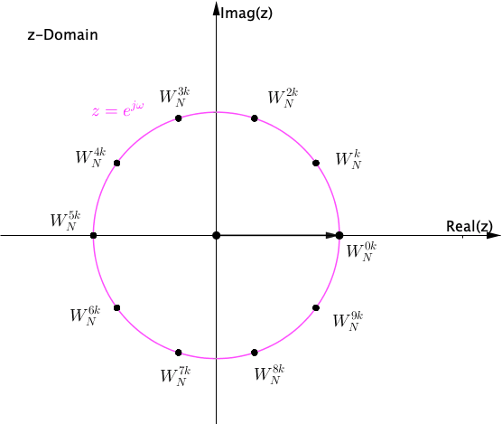

4. 离散傅里叶变换¶
在实际应用中，数字信号处理器中会大量的使用离散时间信号的频率分析，即将时域序列转换成等价的频域表达。在上一章中，我们学习了了利用离散时间傅里叶变换来分析离散时间序列（信号）的频谱。但是，离散时间傅里叶变换往往是频率的连续函数，所以计算机直接处理连续的函数是非常不方便的。我们知道，DTFT 变换等价于将连续时间傅里叶变换在时间轴上均匀采样。那么，在本章中，我们将进一步在频率上对序列的 DTFT 变换进行采样，从而得到时域和频域都离散的频域表达，那么这个过程我们称为离散傅里叶变换，即 DFT。
序列经过 DFT 变换后的到的频域表达仍然是离散的，因此这种频域分析方法更适用于计算机或者数字处理器，在实际应用中被广泛的使用。
4.1. 从 DTFT 到 DFT¶
4.1.1. DTFT 回顾¶
根据上一章的内容，如果离散时间信号能量有限或者是绝对可和的，那么其离散时间傅里叶变换是关于频率的连续且周期的函数。
\begin{equation} X\left(e^{j \omega}\right)=\sum_{n=-\infty}^{\infty} x[n] e^{-j \omega n} \label{eq:dtft} \end{equation}
我们知道，DTFT 变换是对CTFT 变换在时间上的等间隔抽样。离散时间信号$x[n]$可以写成
其中，$F_s$为对连续时间信号$x(t)$的采样频率。令$\omega=\Omega/F_s$，对$x_T(t)$计算连续傅里叶变换
因此，公式\eqref{eq:dtft}实际上就是对$x_T(t)$的连续时间傅里叶变换在时间上的采样（第二个等式中的括号部分）。
4.1.2. DFT 变换¶
由公式\eqref{eq:dtft}定义的DTFT 变换关于频率$\omega$是连续的，而计算机只能处理离散的序列（时域和频域）。因此，离散傅里叶变换（DFT）就是一种时间和频率上都离散的正交变换。下面，我们来简单推导一下 DFT 变换。
DFT 变换实际上可以看做是将公式\eqref{eq:dtft}定义的 DTFT 变换进一步在频域等间隔采样。首先，我们知道 DTFT 变换是周期为$2\pi$的连续周期函数，那么考虑一个周期内$[0,2\pi)$。对于$N$点长序列$x[n]$的 DTFT 变换，我们将一个周期$[0,2\pi)$等间隔离散化，得到$N$个等间隔的频率样本$\omega_{N}[k]$
此时，DTFT 中的变换基$e^{-j\omega n}$，就变成了$W_{N}^{k}=e^{-j \frac{2 \pi k}{N}}$，带入到公式\eqref{eq:dtft}中可以得到

其中$W_{N} = e^{-j 2 \pi / N}$为旋转因子，一个周期内$[0,2\pi)$的频率离散化序列$X[k],k=0,…,N-1$。

因为DTFT 变换是周期信号，频带$[0,2\pi)$外的频谱只是将$X[k]$周期复制。我们可以认为频率抽样之后，一个周期内频谱$X[k]$已经携带了整个频谱的信息。
DFT 变换定义为
注意到，这里序列$x[n]$和 DFT 变换$X[k]$的长度都是$N$。
提示
本节我们假设了序列的长度为$N$，然后推导出了 $N$点 DFT 变换，如公式\eqref{eq:dft}。如果序列的长度为无限长的时候，DFT 变换如何计算呢？
4.1.3. DFT 与 DTFT 之间的关系¶
4.1.4. DFT 变换的矩阵形式¶
将长度为